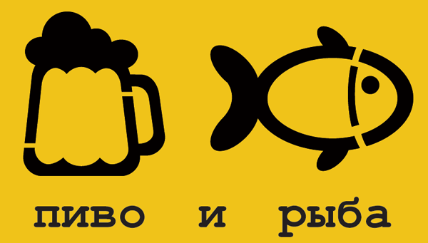

Приглашаем в наш магазин по адресу: Балашиха-2, ул. 40 лет Победы, д. 33 (вход с угла, со стороны бульвара - локация).
Тел: +7 926 483-75-43, E-mail: info@beernfish.com
| Пиво | |||
|---|---|---|---|
| Алк., % | Плотность, % | Производитель | |
| Крюгер бархатное | 4,1 | 12 | Томский пивзавод |
| Крюгер классическое | 5,0 | 12 | |
| Лакинское жигулевское | 4,0 | 11 | Лакинский пивзавод (Владимирская обл.) |
"Грушевый"(Хит продаж) |
Волчихинский пивзавод (Алтайский край) | ||
| Немецкое светлое | 4,7 | 12 |
(Смоленская обл.) |
| Английский Эль светлое | 4,7 | 16 | |
| Бельгийское нефильтрованное светлое | 5,5 | 13 | |
| Чешское оригинальное светлое | 4,7 | 12 | |
| Ирландский Эль темное | 6,5 | 16 | Бочкаревский пивзавод (Алтайский край) |
| Pilsner светлое | 4,0 | 11 | Томский пивзавод |
| Крушовице светлое | 5,0 | 10 | HEINEKEN Česká republika |